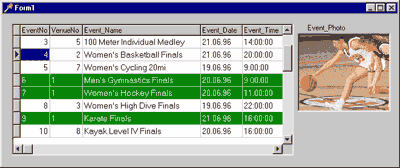
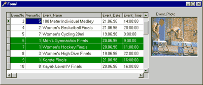
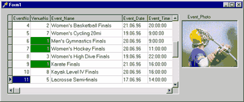
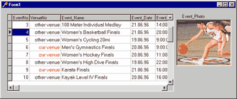
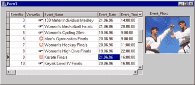
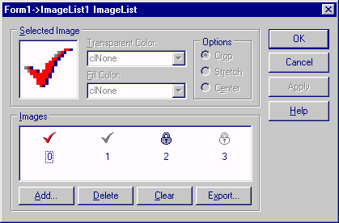
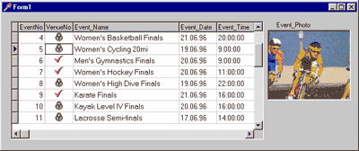

DRKB Explorer
Что можно поместить в TDBGrid?
01.01.2010
Что можно поместить в DBGrid
Наталия ЕлмановаКомпьютер Пресс - CD, 1999, N 5
© Copyright N.Elmanova & ComputerPress Magazine.
Нередко при разработке приложений, использующих табличный вывод данных, требуется отобразить те или иные строки таблиц нестандартным образом, например, с целью привлечения внимания пользователя к этим строкам. В данной статье содержатся некоторые советы, касающиеся нестандартного отображения данных в компоненте TDBGrid.Совет 12. Как изменить цвет строки в TDBGrid
Предположим, нам требуется изменить атрибуты текста и фона строки в компоненте TDBGrid, если значение какого-либо поля удовлетворяет заранее заданному условию. Для этой цели принято использовать обработчик события OnDrawColumnCell этого компонента. Отметим, что возможности, предоставляемые при его использовании, весьма разнообразны. Рассмотрим простейшее приложение с TDBGrid, содержащее один компонент TTable, один компонент TDataSource и один компонент TDBGrid: Установим значения их свойств в соответствии с приведенной ниже таблицей:Компонент |
Свойство |
Значение |
Table1 |
DatabaseName |
BCDEMOS (или DBDEMOS) |
TableName |
events.db |
|
Active |
true |
|
DataSource1 |
DataSet |
Table1 |
DBGrid1 |
DataSource |
DataSource1 |
procedure TForm1.DBGrid1DrawColumnCell(Sender: TObject; const Rect: TRect;
DataCol: Integer; Column: TColumn; State: TGridDrawState);
begin
if (Table1.FieldByName('VenueNo').Value=1) then begin
with DBGrid1.Canvas do begin
Brush.Color:=clGreen;
Font.Color:=clWhite;
FillRect(Rect);
TextOut(Rect.Left+2,Rect.Top+2,Column.Field.Text);
end;
end;
end;
В результате на этапе выполнения при отображении строк, в которых значение поля VenueNo равно 1, фон ячеек будет окрашен в зеленый цвет, а текст будет выведен белым цветом.

Рис. 2 Изменение цвета фона и шрифта в строках со значением поля VenueNo=1 на этапе выполнения.
При выводе выделенных строк все данные в ячейках оказались выровненными по левому краю. Если мы хотим более корректно отобразить выравнивание текста в колонке, следует слегка модифицировать наш код, учтя значение свойства Alignment текущей (то есть рисуемой в данный момент) колонки:
procedure TForm1.DBGrid1DrawColumnCell(Sender: TObject; const Rect: TRect;
DataCol: Integer; Column: TColumn; State: TGridDrawState);
begin
if (Table1.FieldByName('VenueNo').Value=1) then begin
with DBGrid1.Canvas do begin
Brush.Color:=clGreen;
Font.Color:=clWhite;
FillRect(Rect);
if (Column.Alignment=taRightJustify) then
TextOut(Rect.Right-2- TextWidth(Column.Field.Text),
Rect.Top+2,Column.Field.Text)
else
TextOut(Rect.Left+2,Rect.Top+2,Column.Field.Text);
end;
end;
end;
В этом случае выравнивание текста в колонках совпадает с выравниванием столбцов.
Отметим, что величина смещения (в данном случае 2 пиксела), вообще говоря, зависит от гарнитуры и размера шрифта, используемого в данной колонке, и должна подбираться индивидуально.

Рис. 3 Изменение цвета с учетом выравнивания текста в колонках.
Если необходимо отобразить нестандартным образом не всю строку, а только некоторые ячейки, следует проанализировать имя поля, отображаемого в данной колонке, как в приведенном ниже обработчике событий.
procedure TForm1.DBGrid1DrawColumnCell(Sender: TObject; const Rect: TRect;
DataCol: Integer; Column: TColumn; State: TGridDrawState);
begin
if (Table1.FieldByName('VenueNo').Value=1) and
(Column.FieldName='VenueNo') then begin
with DBGrid1.Canvas do begin
Brush.Color:=clGreen;
Font.Color:=clWhite;
FillRect(Rect);
TextOut(Rect.Right-2- TextWidth(Column.Field.Text),
Rect.Top+2,Column.Field.Text)
end;
end;
end;
В результате выделенными оказываются только ячейки, для которых выполняются выбранные нами условия:

Рис. 4 Выделение цветом данных в одной колонке.
Совет 13. Как заменить данные в столбце компонента TDBGrid
Нередко в колонке DBGrid нужно вывести не реальное значение, хранящееся в поле соответствующей таблицы, а другие данные, соответствующие имеющимся (например, символьную строку вместо ее числового кода). В этом случае также используется метод TextOut свойства Canvas компонента TDBGrid:
procedure TForm1.DBGrid1DrawColumnCell(Sender: TObject; const Rect: TRect;
DataCol: Integer; Column: TColumn; State: TGridDrawState);
begin
if (Column.FieldName='VenueNo') then begin
with DBGrid1.Canvas do begin
Brush.Color:=clWhite;
FillRect(Rect);
if (Table1.FieldByName('VenueNo').Value=1) then begin
Font.Color:=clRed;
TextOut(Rect.Right-2-
DBGrid1.Canvas.TextWidth('our venue'),
Rect.Top+2,'our venue');
end else begin
TextOut(Rect.Right-2-
DBGrid1.Canvas.TextWidth('other venue'),
Rect.Top+2,'other venue');
end;
end;
end;
end;

Рис. 5 Замена данных в колонке другими значениями.
Еще один пример - использование значков из шрифтов Windings или Webdings в качестве подставляемой строки.
procedure TForm1.DBGrid1DrawColumnCell(Sender: TObject; const Rect: TRect;
DataCol: Integer; Column: TColumn; State: TGridDrawState);
begin
if (Column.FieldName='VenueNo') then begin
with DBGrid1.Canvas do begin
Brush.Color:=clWhite;
FillRect(Rect);
Font.Name:='Wingdings';
Font.Size:=-14;
if (Table1.FieldByName('VenueNo').Value=1) then begin
Font.Color:=clRed;
TextOut(Rect.Right-2-
DBGrid1.Canvas.TextWidth('J'),
Rect.Top+1,'J');
end else begin
Font.Color:=clBlack;
TextOut(Rect.Right-2- DBGrid1.Canvas.TextWidth('F'),
Rect.Top+1,'F');
end;
end;
end;
end;

Рис. 6 Использование символов из шрифта Windings для выделения нужных значений в колонке.
Совет 14. Как поместить графическое изображение в TDBGrid
Использование свойства Canvas компонента TDBGrid в методе OnDrawColumnCell позволяет не только выводить в ячейке текст методом TextOut, но и размещать в ячейках графические изображения. В этом случае используется метод Draw свойства Canvas. Модифицируем наш пример, добавив на форму компонент TImageList и поместив в него несколько изображений.  Рис. 7 Компонент TImageLis с изображениями, помещаемыми в TDBGrid Модифицируем код нашего приложения:
procedure TForm1.DBGrid1DrawColumnCell(Sender: TObject; const Rect: TRect;
DataCol: Integer; Column: TColumn; State: TGridDrawState);
var Im1: TBitmap;
begin
Im1:=TBitmap.Create;
if (Column.FieldName='VenueNo' ) then begin
with DBGrid1.Canvas do begin
Brush.Color:=clWhite;
FillRect(Rect);
if (Table1.FieldByName('VenueNo').Value=1)
then begin
ImageList1.GetBitmap(0,Im1);
end else begin
ImageList1.GetBitmap(2,Im1);
end;
Draw(round((Rect.Left+Rect.Right-Im1.Width)/2),Rect.Top,Im1);
end;
end;
end;
Теперь в TDBGrid в колонке VenueNo находятся графические изображения.

Рис. 8 Вывод графических изображений в колонке
Взято из http://delphi.chertenok.ru